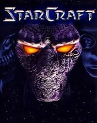
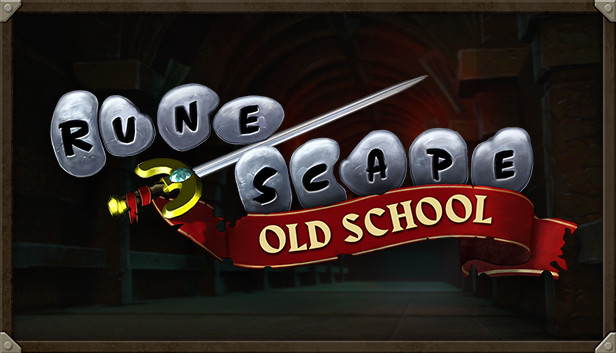

Counter-Strike
Steam
Tactical Multiplayer First-Person Shooter
Created as a mod of Half-Life June 19, 1999
Currently has around 540,000 to 1.1 million concurrent players online
I have many hobbies, but I probably spend the most time playing video games.
Tactical Multiplayer First-Person Shooter
Created as a mod of Half-Life June 19, 1999
Currently has around 540,000 to 1.1 million concurrent players online

Multiplayer Real-Time Strategy Game
Released on March 31, 1998
Currently has around ~8800 concurrent players online
with an active player base around 100,000

Massively Multiplayer Online Role-Playing Game
Originally released on January 4, 2001
Old School Runescape was released on February 22, 2013
Currently has around 100,000 to 150,000 concurrent players online